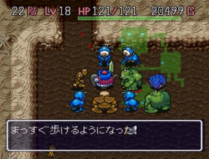

不思議のダンジョン トルネコの大冒険
1993年9月19日発売
開発・発売：チュンソフト（現スパイク・チュンソフト）

今まで「不思議のダンジョン」をやったことがなかったのですが、ドラクエにはまってからこのゲームをプレイしました。
見事にハマりました。
何回やっても飽きません。キャッチフレーズの「１０００回遊べるＲＰＧ」の通り、ずっと遊んでいられます。
「不思議のダンジョン」とは、入る度に地形も落ちているアイテムも全て変わってしまうというダンジョンをひたすら進んでいくというもので、
やられる度に持っているアイテムがなくなり、ステータスもレベル１にリセットされてしまいます。
理不尽なシステムに思えますが、これがクセになっていくのです。ぜひプレイしてもらいたいです。
時間をかけてじっくり遊びたい人にはお勧めのゲームです。
運の要素も強いですが、腕を磨けば不運も逆転させられるようになっているゲームです。このゲームは本当に奥が深いです。
もし、「やってみたい！」という方がいれば、私（本間）に言ってもらえればいつでもお貸ししますよ。
このソフトは特におすすめです。興味がわいたら「風来のシレン」もやってみてください！